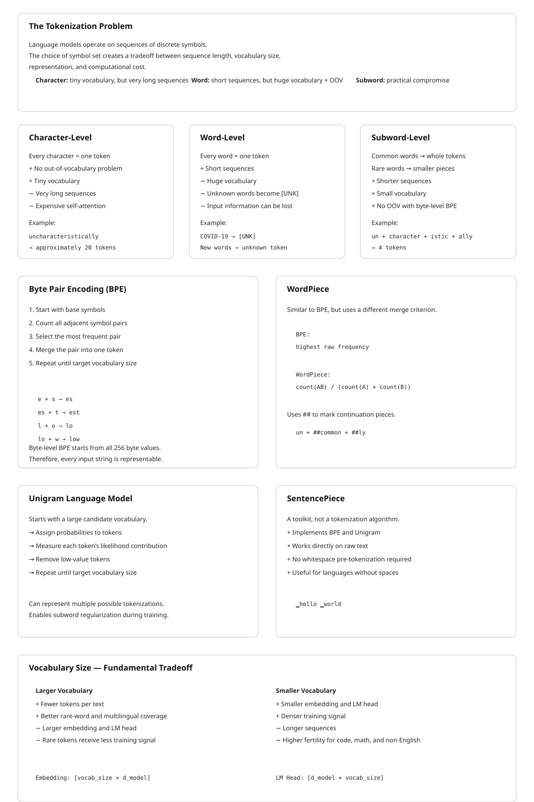

22 Tokenization During Training
The canonical question for this chapter: How does a model’s vocabulary get built, and why does the choice of subword algorithm permanently shape everything the model can represent?
22.1 The Problem That Tokenization Solves
A language model is a function over sequences of discrete symbols. The choice of symbol set is not obvious. Three options present themselves immediately, each with a serious flaw.
Character-level tokenization treats every Unicode code point as a token. The vocabulary is tiny (roughly 100,000 characters in Unicode, though practical vocabularies are far smaller) and no out-of-vocabulary problem exists: any string is representable. The flaw is sequence length. The word “uncharacteristically” requires 20 tokens. A 2,048-token context window, measured in characters, holds roughly a paragraph. Self-attention cost scales quadratically with sequence length, so character-level models pay a steep computational price for what is, in practice, trivial structure: spelling.
Word-level tokenization goes to the other extreme. The model treats each whitespace-delimited word as a single token. This compresses sequences efficiently and aligns well with human intuition about linguistic units yet on the other hand the flaws are fundamental. First, vocabulary size: English alone has hundreds of thousands of distinct word forms, and that is before proper nouns, neologisms, and domain-specific terminology. A vocabulary large enough to be useful is also large enough to make the embedding table and output projection layer expensive. Second, and more seriously, any word not seen during training is unknown. A word-level model trained on English Wikipedia has never seen “COVID-19” or “zoombombing” or any company name coined after its training cutoff (2019 for this example). It cannot represent them; it can only produce a special [UNK] token, at which point the model has lost the input information entirely.
Subword tokenization resolves both problems by refusing to commit to either extreme. Common words appear as single tokens. Rare words are split into meaningful pieces (prefixes, suffixes, stems) that the model has seen in other contexts. The word “uncharacteristically” might become [“un”, “character”, “istic”, “ally”], four tokens, each of which carries recoverable meaning. An unseen technical term like “CRISPR” might become [“C”, “R”, “IS”, “PR”] which is not meaningful decomposition, but at least the characters are present and the model can condition on them.
The choice of subword algorithm, and the vocabulary size it produces, is made once per model family. GPT-4 uses a vocabulary of roughly 100,000 tokens. LLaMA 3 uses 128,256 tokens. BERT uses 30,522 WordPiece tokens. These numbers are fixed before model training begins and cannot be changed without retraining the model from scratch. Every downstream decision like embedding table dimensions, output projection matrix size, how many tokens a document occupies, what the model can represent at all is downstream of this choice.
22.2 Byte Pair Encoding
Byte Pair Encoding (BPE) was introduced as a data compression algorithm in 1994 and adapted for neural machine translation by Sennrich et al. in 2016. It remains the dominant tokenization algorithm for large language models. GPT-2, GPT-3, GPT-4, LLaMA, Mistral, Falcon, and most other major models use BPE or a variant of it.
22.2.1 The Algorithm
BPE training is an iterative merge procedure applied to a large text corpus. The algorithm:
Initialize the vocabulary with the base symbol set. For text BPE, the base symbols are Unicode characters. For byte-level BPE (described below), the base symbols are the 256 byte values.
Represent the corpus as a sequence of base symbols. Typically the corpus is pre-tokenized into words by whitespace and punctuation, and each word is represented as a sequence of characters followed by a special end-of-word marker. GPT-2 uses
Ġ(a space prefix) to distinguish word-initial tokens from word-internal ones; this matters because “ing” at the start of a word differs semantically from “ing” as a suffix.Count all adjacent symbol pairs across the corpus.
Merge the most frequent pair. If (“e”, “r”) appears 47,000 times and no other pair appears more often, add “er” to the vocabulary and replace every occurrence of (“e”, “r”) in the corpus with the new token “er”.
Repeat until the target vocabulary size is reached.
Each merge adds exactly one token to the vocabulary. A target vocabulary of 50,000 tokens (GPT-2’s size) requires 50,000 minus the number of base symbols merges.
The result is a vocabulary in which the most frequent substrings in the training corpus are represented as single tokens. Common English words or morphemes appear whole while character sequences that the corpus rarely produces are represented by their constituent base symbols.
22.2.2 Byte-Level BPE
Standard BPE with Unicode characters still has a representation problem: Unicode has over a million code points, and any character not in the base vocabulary produces an error. GPT-2 addressed this with a conceptually simple fix: use all 256 byte values as the base vocabulary rather than Unicode characters. Any string, in any language or encoding, can be represented as a sequence of bytes. The BPE merge procedure then operates over bytes.
This eliminates the out-of-vocabulary problem completely. A byte-level BPE tokenizer never encounters an input it cannot represent. The practical tradeoff is that languages not well-represented in the training corpus get inefficient tokenization: their common words are not merged into single tokens, so they occupy more tokens per word than English. A 2024 study found that GPT-4’s tokenizer encodes Amharic text using roughly 4–5× more tokens per character than English text, making API costs and context window utilization significantly worse for low-resource languages.
22.2.3 Learning the Vocabulary: A Worked Example
Consider a tiny corpus: “low lower newest widest”. After whitespace splitting and adding end-of-word markers, the initial representation is:
l o w </w> : 5 occurrences
l o w e r </w> : 2 occurrences
n e w e s t </w> : 6 occurrences
w i d e s t </w> : 3 occurrencesCounting adjacent pairs across all occurrences:
| Pair | Count |
|---|---|
| (e, s) | 9 |
| (s, t) | 9 |
| (e, w) | 6 |
| (l, o) | 7 |
| … | … |
The pair (e, s) and (s, t) are tied at 9. The algorithm picks one (say, (e, s)) and merges:
l o w </w> : 5
l o w e r </w> : 2
n e w es t </w> : 6
w i d es t </w> : 3New vocabulary: {l, o, w, e, r, n, s, t, i, d, , es}. Next iteration, (es, t) appears 9 times and is the top pair:
n e w est </w> : 6
w i d est </w> : 3Vocabulary adds est. After a few more merges, “low” might become a single token. After thousands of merges on a real corpus, common English words are single tokens and common morphemes are single tokens, while rare strings remain as byte sequences.
22.3 WordPiece
WordPiece, developed at Google and used in BERT and its derivatives, is conceptually similar to BPE but differs in the merge criterion. Where BPE selects the pair with the highest raw frequency, WordPiece selects the pair that maximizes the likelihood of the training corpus under the language model induced by the current vocabulary.
Formally, WordPiece scores each candidate merge (A, B) → AB as:
score(A, B) = count(AB) / (count(A) × count(B))This is the pointwise mutual information of A and B. A merge is favored not just because AB is frequent, but because the co-occurrence of A and B is surprising given their individual frequencies. The pair (“un”, “##common”) would be favored over (“e”, “##r”) even if the latter is more frequent, because the combination “uncommon” is much more predictable from its parts than “er” is from “e” and “r”.
WordPiece uses a ## prefix convention to mark tokens that continue a word rather than beginning one. The token ##ing is the continuation “ing”, while ing is the word-initial “ing”. This makes it easy to recover word boundaries from a token sequence.
The practical behavior of BPE and WordPiece is similar for large vocabularies on large corpora. BERT’s 30,522-token WordPiece vocabulary and GPT-2’s 50,257- token BPE vocabulary both segment English text into roughly 1.3 tokens per word. The engineering differences matter more for implementation: WordPiece vocabularies are trained in a top-down fashion with a fixed vocabulary size target, while BPE proceeds bottom-up.
22.4 Unigram Language Model Tokenization
The Unigram Language Model algorithm, introduced by Kudo (2018) and used in SentencePiece (which underlies T5, mT5, ALBERT, and XLNet), approaches the problem differently. Rather than building a vocabulary through iterative merging, Unigram starts with a large candidate vocabulary and iteratively prunes it.
The procedure:
Initialize with a large vocabulary (typically 10–100× the target size) containing all substrings that appear with sufficient frequency in the corpus.
Train a unigram language model over the current vocabulary: assign each token a probability proportional to its frequency.
For each token, compute how much the corpus likelihood would decrease if that token were removed from the vocabulary. Tokens whose removal causes little likelihood decrease are candidates for pruning.
Remove the bottom p% of tokens (typically 10–20%) ranked by their likelihood contribution.
Repeat until the target vocabulary size is reached.
The Unigram model defines the probability of a tokenization as the product of the probabilities of its constituent tokens, summed over all possible tokenizations using dynamic programming. At inference time, the tokenizer finds the most probable tokenization of each input string.
The key advantage of the Unigram model is that it naturally handles tokenization ambiguity and can assign probabilities to multiple tokenizations of the same string. This enables subword regularization: during training, instead of always using the single most probable tokenization, the model is presented with multiple different tokenizations of the same input, sampled according to their probabilities. This acts as a form of data augmentation and has been shown to improve robustness, particularly for morphologically rich languages.
22.5 SentencePiece
SentencePiece is not a tokenization algorithm but a toolkit, developed by Kudo and Richardson at Google, that implements both BPE and Unigram in a language-agnostic framework. Its key design decision: it tokenizes raw text directly, without requiring a pre-tokenization step that splits on whitespace.
Languages like Chinese, Japanese, and Thai have no whitespace between words. Applying a whitespace-splitting pre-tokenizer to Chinese text produces a sequence of individual characters, which is not a useful prior for BPE merging. SentencePiece treats the input as a sequence of Unicode characters and learns its own whitespace handling. The space character receives its own representation: typically ▁ (U+2581, a lower one-eighth block), which appears as a prefix on word-initial tokens.
LLaMA 1 and LLaMA 2 use a SentencePiece BPE tokenizer with a vocabulary of 32,000 tokens. LLaMA 3 switched to a tiktoken-based BPE tokenizer with 128,256 tokens, a 4× vocabulary expansion motivated partly by better multilingual coverage and partly by reduced token fertility (tokens per word) for code.
22.6 Vocabulary Size: The Fundamental Tradeoff
Vocabulary size is a hyperparameter with pervasive consequences. The embedding table has shape [vocab_size, d_model] and the output projection (llm_head) has shape [d_model, vocab_size]. For a model with d_model = 4,096 (LLaMA 2 7B), each additional 1,000 vocabulary tokens adds 4,096,000 parameters to the embedding table and another 4,096,000 to the output projection, roughly 8M parameters, stored in float16, occupying 16 MB.
| Model | Vocabulary Size | d_model | Embedding + LM Head |
|---|---|---|---|
| GPT-2 | 50,257 | 768 | 77M params |
| BERT-base | 30,522 | 768 | 47M params |
| LLaMA 2 7B | 32,000 | 4,096 | 262M params |
| LLaMA 3 8B | 128,256 | 4,096 | 1,051M params |
| GPT-4 (estimated) | ~100,000 | — | — |
| T5-base | 32,128 | 768 | 49M params |
For LLaMA 3 8B, the embedding and lm_head parameters represent roughly 13% of the total 8B parameter count which is not negligible. Vocabulary size is essentially a direct tax on model size.
The tradeoffs in both directions:
Larger vocabulary: - Lower sequence length for the same text (higher compression) - Shorter effective context window in characters - Better representation of rare words and domain-specific terms - Better multilingual coverage without fertility explosion - Larger embedding and lm_head matrices - Sparser training signal: rare tokens appear less often during training
Smaller vocabulary: - Longer sequences for the same text - More tokens consumed per concept, reducing effective context - Higher fertility for code, math, and non-English text - Smaller, cheaper embedding and lm_head layers - Denser training signal: each token is seen more often
The sweet spot has shifted upward over time. GPT-2 (2019) used 50,257 tokens. The field has since converged on the 100k–150k range for general-purpose models. The main driver is multilingual coverage: a 32,000-token vocabulary trained on English-dominated text tokenizes many other languages at 3–5× English fertility, which is a meaningful usability degradation.
22.7 Special Tokens
Every tokenizer reserves a set of token IDs for special purposes that are not learned by the BPE or Unigram procedure. These special tokens are added after vocabulary training and assigned IDs, typically at the ends of the ID range to avoid collision with learned tokens.
Common special tokens and their functions:
| Token | Common forms | Purpose |
|---|---|---|
| Beginning of sequence | <s>, <\|begin_of_text\|> |
Marks the start of a context |
| End of sequence | </s>, <\|eot_id\|>, <\|endoftext\|> |
Signals generation completion |
| Padding | <pad>, [PAD] |
Fills sequences to uniform length in batches |
| Unknown | [UNK] |
Represents out-of-vocabulary tokens (absent in byte-level BPE) |
| Mask | [MASK] |
Used in masked language model training (BERT-style) |
| Separator | [SEP] |
Separates segments in BERT-style dual-input tasks |
| Classification | [CLS] |
BERT’s pooling token; pooled for classification tasks |
| Role markers | <\|user\|>, <\|assistant\|>, <\|system\|> |
Chat template structure |
| Tool call tokens | <tool_call>, <\|python_tag\|> |
Structured tool use in instruction-tuned models |
The design of special tokens matters for fine-tuning stability. If a special token like <\|assistant\|> appears in natural text (someone writing about the token itself), the model may behave unpredictably. In practice, the angle-bracket or pipe-bracket formats were chosen specifically because they are rare in natural text. LLaMA 3 uses a more elaborate special token scheme with 256 reserved positions (<\|reserved_special_token_0\|> through <\|reserved_special_token_250\|>) to allow future special token additions without changing the vocabulary size.
22.8 Tokenizer Training Data and Its Consequences
The tokenizer vocabulary reflects the distribution of the corpus used to train it. This is not a detail; it is a design choice with first-order effects on model behavior.
Code. A model trained primarily on natural text will have a tokenizer with poor code fertility. Python keywords might be single tokens, but multi-character operators like !=, <=, and += might split. Indentation whitespace (significant in Python) gets tokenized as a sequence of space tokens, consuming context budget for what is purely structural information. Code-specialized models (CodeLlama, Starcoder, DeepSeek-Coder) typically add code-specific merges to their tokenizer or use a tokenizer retrained on a code-heavy corpus. The Starcoder tokenizer allocates specific tokens for common indentation patterns (two spaces, four spaces, eight spaces) as single tokens.
Mathematics. Mathematical notation is hostile to standard tokenizers. Expressions like \frac{d}{dx} or \mathbb{R}^{n \times n} fragment into many tokens, each individually meaningless. The number “3.14159265” might become [“3”, “.”, “1”, “4”, “1”, “5”, “9”, “2”, “6”, “5”], ten tokens for ten digits. Models like Minerva (trained on arXiv and math textbooks) benefit from tokenizers that treat common LaTeX constructs as single units.
Numbers. How numbers tokenize has non-obvious arithmetic consequences. If “123” is a single token but “124” splits as [“12”, “4”], the model’s ability to generalize numerical relationships is compromised. The model must learn that the token “123” is numerically close to “12” + “4”,
a fact that is not implicit in the token IDs. Some tokenization schemes (notably those used for models specialized in arithmetic) tokenize digits individually to ensure that positional arithmetic generalizes correctly.
Non-English languages. As noted above, a tokenizer trained primarily on English text imposes high token fertility on other languages. This is an active area of remediation: mT5, XLM-RoBERTa, and BLOOM trained their tokenizers on multilingual corpora with careful sampling to equalize fertility across languages. BLOOM’s tokenizer was trained on a 341 billion token corpus balanced across 46 languages plus code.
22.9 The Relationship Between Tokenizer and Model Training
The tokenizer training run is separate from and prior to the model training run. It proceeds as follows:
Collect a corpus representative of the model’s intended data distribution. For GPT-2, this was WebText (40GB of web text). For LLaMA 3, it was a 15.6 trillion token multilingual corpus. The tokenizer training corpus need not be identical to the model training corpus but should have the same distributional properties.
Run the tokenization algorithm (BPE, WordPiece, or Unigram) to target vocabulary size. This is computationally cheap relative to model training, a vocabulary of 100,000 tokens can be constructed from a multi-billion-token corpus in a few hours on a single machine.
Save the vocabulary file (a JSON or SentencePiece
.modelfile mapping token strings to integer IDs) and the merge rules (for BPE, an ordered list of all merges performed).Use this tokenizer to convert all training data into token ID sequences before model training begins. The model training loop never sees raw text, only integer sequences.
This separation has an important implication: the tokenizer is frozen for the lifetime of the model. If the model is later fine-tuned on a domain with different vocabulary characteristics (medical text, legal text, a new programming language), the tokenizer cannot be updated without rebuilding the embedding table from scratch. This is one reason why large vocabulary sizes and multilingual tokenizer training have become standard practice: they reduce the probability that a downstream use case encounters catastrophic fertility problems.
The interaction between tokenization and the training objective is subtle. Next-token prediction trains the model to predict the next token ID given all preceding token IDs. The model learns statistics over tokens, not characters or words. If “unfortunately” is a single token, the model learns a rich representation for it. If “unfortunately” splits as [“un”, “fort”, “unately”], the model must learn the composition across three prediction steps. Neither is obviously worse (the model can learn either way) but the representations that emerge are different.
22.10 Tokenizer Pathologies and Failure Modes
Reversal asymmetry. Tokenizers frequently produce different tokens for a word depending on whether it appears at the start of a sentence versus in the middle. BPE with space-prefix encoding (GPT-2 style) distinguishes “▁hello” (word-initial) from “hello” (word-internal). This is correct behavior (case-insensitive models with naive tokenizers would conflate them) but it means that token IDs are not invariant to position within a sentence.
Capitalization sensitivity. “Hello”, “hello”, and “HELLO” frequently map to different tokens. A model that has not seen a word capitalized a particular way during training may not generalize well to that capitalization. This is particularly problematic for all-caps text (error messages, legal text) and for proper nouns that appear in inconsistent capitalizations.
Number fragmentation. As noted above, numbers tokenize inconsistently. “100” is often a single token; “101” may be [“10”, “1”]; “1001” may be [“100”, “1”]. This makes arithmetic notoriously difficult for tokenizer-dependent models and is one motivation for the shift toward digit-level tokenization in math-specialized models.
Whitespace sensitivity. Many tokenizers distinguish “dog” from ” dog” (with a leading space). A prompt that inadvertently adds or removes a leading space (easy to do when concatenating strings in code) changes the token sequence, which changes the model’s input, which can change the output.
The “SolidGoldMagikarp” class of pathologies. During GPT-2 and GPT-3 era research, Rumbelow and Watkins (2023) discovered that certain tokens in OpenAI’s tokenizer produced highly anomalous model behavior when prompted directly. The token “SolidGoldMagikarp” (a Reddit username that appeared frequently enough in the training corpus to earn its own token) caused unexpected outputs when the model was asked to repeat it. The underlying cause: the token was present in the tokenizer vocabulary (earned through high frequency in the BPE training corpus) but essentially absent from the model’s training data, perhaps filtered out by the data pipeline. The model had never learned a representation for this token ID, so querying it produced garbage outputs. This pathology reveals that the tokenizer training corpus and the model training corpus need to be in close distributional agreement.
22.11 Tokenizer Compatibility and Model Identity
The tokenizer is part of a model’s identity in a strict technical sense. Two models with different tokenizers cannot share weights, cannot be compared token-for-token on benchmarks without normalization, and cannot be used interchangeably in serving infrastructure without a tokenizer swap. This has practical consequences:
Benchmark comparability. Perplexity, which measures how surprised a model is by a held-out test set, is not comparable across models with different tokenizers. A model with a large vocabulary that tokenizes the test set into fewer tokens may report lower perplexity simply because it has fewer prediction steps, not because its predictions are better. Correct comparison requires normalizing by bits-per-character or bits-per-byte rather than bits-per-token.
Context window comparison. A “32,768-token context window” means different things for different models. GPT-3.5 (~100k vocab) fits more characters per context slot than LLaMA 2 (SentencePiece, 32k vocab). Quoting context window sizes in tokens without specifying the tokenizer is imprecise.
Transfer and adapter training. Parameter-efficient fine-tuning methods like LoRA add adapters to an existing model’s weights without modifying the embedding table. If the fine-tuning data contains vocabulary not well-represented in the original tokenizer, the adapters cannot fix the underlying fertility problem, they can only learn compensating patterns within the existing token space.
22.12 The tiktoken Implementation
OpenAI’s tiktoken library is the implementation most practitioners encounter directly. It implements byte-level BPE and is the tokenizer for GPT-2, GPT-3, GPT-3.5, GPT-4, and the text-embedding-ada-002 and subsequent embedding models. LLaMA 3 adopted tiktoken’s format (though with a different vocabulary) to enable compatibility with existing tooling.
tiktoken’s vocabulary files ship as a serialized mapping from base64-encoded byte sequences to integer IDs. The merge rules ship as an ordered list of pairs, one merge per line. The tokenization procedure at inference time applies merges in training order, the merge that was learned first (and therefore covers the most frequent pair in the training corpus) is applied first.
A benchmark figure: tiktoken encodes approximately 5 million tokens per second on a modern CPU in Python (with Rust internals via a Python binding). This speed matters at scale: a training corpus of 15 trillion tokens requires 15 trillion tokenization operations before the first gradient step.
22.13 Key Takeaways
- Subword tokenization solves the vocabulary coverage problem by decomposing rare words into known subword units while representing common words as single tokens.
- BPE iteratively merges the most frequent adjacent symbol pair in a corpus; WordPiece uses pointwise mutual information instead of raw frequency; Unigram starts large and prunes.
- Byte-level BPE eliminates the out-of-vocabulary problem entirely by using the 256 byte values as the base vocabulary — any input string is representable.
- The embedding table and lm_head together have shape proportional to [vocab_size × d_model]; at d_model = 4,096, every 1,000 additional vocabulary tokens adds approximately 16 MB of parameters in float16.
- LLaMA 3’s shift from 32,000 to 128,256 tokens added roughly 1 billion parameters in embedding and lm_head layers — about 13% of the model’s size.
- The tokenizer training run is separate from model training and uses only the frequency statistics of the corpus, not gradient descent.
- Tokenizer vocabulary reflects its training corpus: a tokenizer trained on English text imposes 3–5× higher token fertility on many non-English languages.
- Number tokenization is inconsistent by design, which contributes to LLM arithmetic difficulties; digit-level tokenization is used in some math- specialized models as a remedy.
- Perplexity is not comparable across models with different tokenizers; normalization must be done per byte or per character, not per token.
- The “SolidGoldMagikarp” class of pathology arises when a token appears in the tokenizer vocabulary but not in the model training data, producing undefined model behavior.
- Special tokens (BOS, EOS, role markers, tool call tokens) are not learned by the subword algorithm; they are added to the vocabulary after BPE training and must be handled explicitly in data formatting pipelines.

22.14 Further Reading
Sennrich, R., Haddow, B., & Birch, A. (2016). Neural Machine Translation of Rare Words with Subword Units. ACL. — The paper that adapted BPE for NLP; the core argument about morphological decomposition is still the clearest statement of why subword tokenization works.
Kudo, T. (2018). Subword Regularization: Improving Neural Network Translation Models with Multiple Subword Candidates. ACL. — Introduces the Unigram language model tokenizer and the subword regularization training technique; the theoretical treatment of tokenization ambiguity is the key contribution.
Kudo, T., & Richardson, J. (2018). SentencePiece: A simple and language- independent subword tokenizer and detokenizer for Neural Text Processing. EMNLP. — The SentencePiece toolkit paper; explains the language-agnostic design and the ▁ whitespace convention.
Devlin, J., Chang, M.-W., Lee, K., & Toutanova, K. (2019). BERT: Pre-training of Deep Bidirectional Transformers for Language Understanding. NAACL. — Introduces WordPiece in the context of masked language modeling; the original description of the [CLS], [SEP], and [MASK] special tokens.
Rust, P., Pfeiffer, J., Vulić, I., Ruder, S., & Gurevych, I. (2021). How Good Is Your Tokenizer? On the Monolingual Performance of Multilingual Language Models. ACL. — Systematic analysis of token fertility across languages and its effect on downstream task performance; the fertility tables are essential reading for anyone building multilingual systems.
Rumbelow, J., & Watkins, M. (2023). SolidGoldMagikarp (plus, prompt generation). Alignment Forum. — The blog post documenting anomalous token behavior; the clearest empirical demonstration that tokenizer and model training corpora must match.
Touvron, H., et al. (2023). LLaMA 2: Open Foundation and Fine-Tuned Chat Models. — Section 2 describes the SentencePiece tokenizer design decisions for LLaMA 2; useful contrast with LLaMA 3’s subsequent shift to tiktoken.